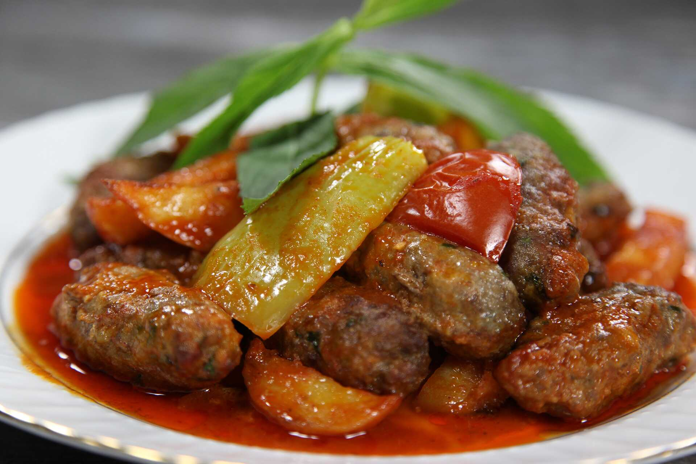

Homepage
Izmir Kofte

Description
I think one of the most popular versions of meatballs is İzmir meatball. So at least for me. Like any dish cooked in the oven, it is a click more delicious than pot dishes. I do not know if it is true, but I attribute this to the fact that all sides of the food receive almost equal temperature. In cookware, the direct heat taken from the bottom is transmitted upwards, its effect decreases, in short. With this logic, the six is cooked quickly and the top is cooked later. But since the heat comes from all sides in the oven, all sides are cooked at the same time. For this reason, the consistency of the sauce is more intense. Again, depending on this, its flavor becomes more intense.
Ingredients
- 2 large potatoes
- 400 gr. ground meat
- 1 onion
- 1 egg
- 3 tablespoons bread crumbs,
- 1 handful minced parsley
- 1 teaspoon black pepper
- 1 teaspoon cumin
- Salt
- 2 tbsps flour
- Vegetable oil for frying.
Sauce
- 2 tablespoons vegetable oil
- 1 tablespoon tomato paste
- 2 tomatoes, grated
- 2 teaspoons paprika
- 2 cups water
- 1 teaspoon salt.
Steps
- Add onion to the meat
- Stir in the egg, breadcrumbs, parsley, cumin, black pepper and salt, then mix well with your hands
- Form the meat mixture into long oval shaped patties
- Peel and slice the potatoes in half moon
- Heat vegetable oil in a pan
- Fry potatoes
- Coat koftas with flour and fry in the same oil
- Set potatoes and koftas into a baking dish
- In a bowl combine all of the sauce ingredients and pour in the dish
- Bake in a 200 C degrees preheated oven for 15-20 mins.